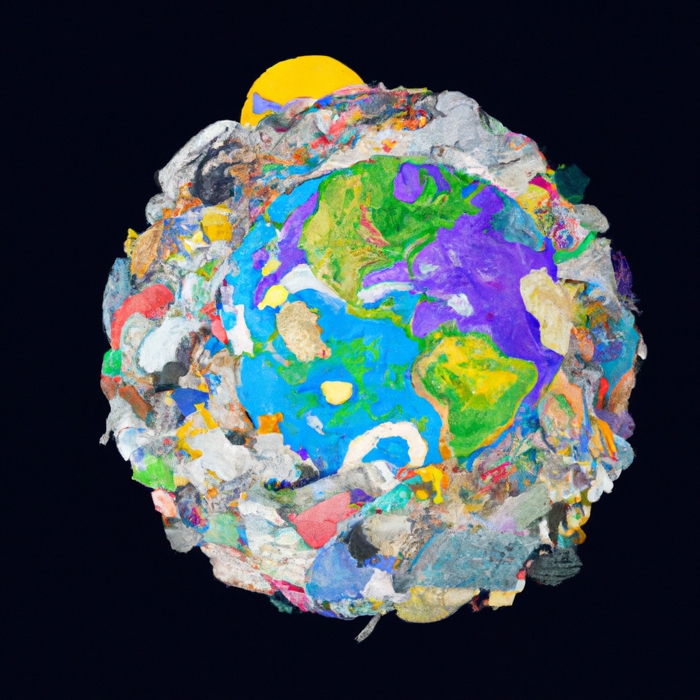

Breaking news from NASA! The space agency has discovered a planet that is entirely made up of unfinished side projects. The planet, named Procrastinatia, is located in a distant galaxy and is estimated to be about the size of Jupiter.
According to NASA scientists, Procrastinatia is a unique planet unlike anything we've ever seen before. It's made up entirely of half-finished projects, abandoned dreams, and unfulfilled promises. The planet is covered in vast oceans of unfinished novels, incomplete paintings, and half-built sculptures.
Scientists at NASA are still trying to determine how Procrastinatia formed and what kind of life, if any, can exist on the planet. However, one thing is clear: Procrastinatia serves as a stark reminder of the dangers of putting off important tasks and letting them pile up over time.
Some experts are already calling for Procrastinatia to be declared a protected area, as they fear that its inhabitants may one day try to escape and spread their unfinished projects to other parts of the universe. Others are more optimistic, seeing Procrastinatia as a potential source of inspiration for artists, writers, and other creative types.
As for NASA, the agency says it plans to launch a mission to Procrastinatia in the coming years, in order to learn more about the planet and its unusual composition. In the meantime, scientists will continue to study Procrastinatia from afar, using advanced telescopes and other technologies to unravel the mysteries of this strange and fascinating world.